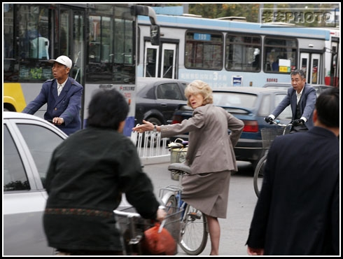
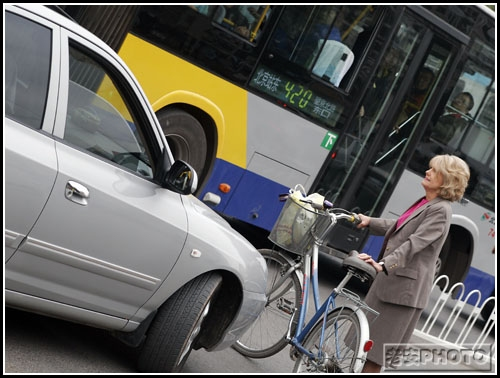
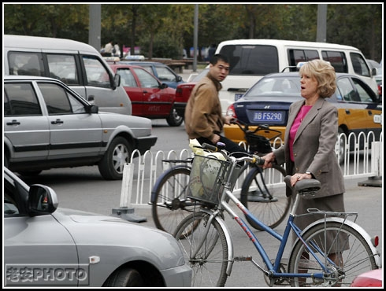
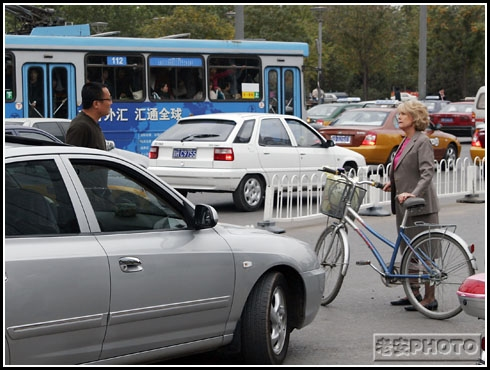
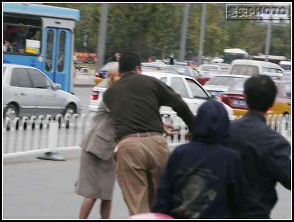
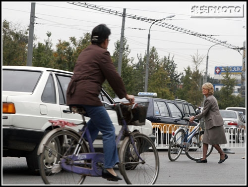

10月20号在北京街头发生的一幕 @ Oct 26, 2006
中国是礼仪之邦。一个老外骑着自行车，有辆汽车上了非机动车道；

老外跟司机微笑着说：请您驶入车行道好吗？

司机毫不理会，路人都在冷眼的看着，好像老外在搞笑；

司机后来火了，下车推了老外的自行车一下，要她让路；

老外依旧坚持，希望轿车遵守交通规则，驶入行车道。大家可以看到只要车稍微后退一点点再左拐就可以驶入行车道了；

司机火了，又下车了，说：你走开不走开？

司机冲上前去，拿起老外的自行车扔在了一边，说：“再不让路把你自行车砸烂...”

最终老外坳不过七尺壮男，无奈的看着汽车驶入了非机动车道。但是她没有放弃，开始拦住从后面来的车辆；

最后给那个司机一个特写！

原文来自：BBS.ZILING.COM
33 Responses to “10月20号在北京街头发生的一幕”
2006-10-26
被外国人贬低部分国人素质之低也是情有可原，要自省。。。。。。
2006-10-26
最后的特写不够大，再大一点！
2006-10-26
孽畜!
2006-10-26
看第一张图片,还有骑反道的自行车...
2006-10-26
礼仪之邦？！
唉？ 警察叔叔呢？
2006-10-26
别地方我不知道, 在北京.. 这种 流氓孽畜 多的很..
看见有外国人会管这种事.. 心里...有种愧疚感
2006-10-26
When I see this, I can not be proud to be Chinese.
2006-10-27
文明 vs 野蛮 !
2006-10-27
【龙虎网报道】 6％开车人挤占65％行路人 南京慢车道严重告急
2006-10-27
昨天还看了北京街头小乞丐杨丹的故事，都是让人扼腕不已的图片。中国的将来在哪里？
http://ysyfgzs.bokee.com/5763293.html
2006-10-27
已经习惯了。。
2006-10-27
我觉得这个老太太是老外认死理的正面反映。 不过也说点老外认死理的反面例子来增强一下大家的自信心。就我的经验和认识，老外浆糊脑子的比例实在比国人高出很多。最近就一个合同客户强调系统一定要达到他们预定的出卡速度，可是我们这里的老外工程师们就是说不行，我们既有产品不是这个速度，然后开始和客户就技术参数和细节说上了几个小时。客户直晕，觉得简直鸡同鸭讲。我的中国同事说：“客户谁关心你用几根电线几个芯片，他只要你达到他的要求，你就算在机器里放20个猴子来发卡，只要能达到速度，那是你自己的事。扯那么多干嘛！”我有段时间真是看到个老外就想炒（当然我的权力炒不了几个人），半个小时能解决的事要开n多个会，尽说些废话。更可气的是，要干活的时候谁也找不到，到招待客户的时候，居然要求捎上呼啦啦30多个自己公司的人去白吃白喝，因为“要谢谢他们在项目上的工作”—难道没付你们工资是怎么的？再说了，你们干的那个活儿实在也不咋地，工期都拖了几个月啦！
2006-10-27
ANYAYAYA：我就欣赏美国人的这种性格，能做就是能做，不能做就是不能做，美国人表里如一，不象中国人没有一点原则性，美国人能自觉守法，就拿我们的工作来说，有患者拿来自己改过的处方，其实我们完全可以按方抓药，法律上我们也没有责任，美国人都会很负责地打电话给大夫。要这事放在中国早就乱套了，又没人查能赚钱不赚就是傻子。
2006-10-27
西方社会的道德水平比中国高，很多人有正义感。
2006-10-29
你丫又来找抽来了。西方国家也会每年也会有些类似雷锋舍己为人似的人物评选，不过不象中国那样搞得纯形式化和泛政治化。西方国家老百姓生活中警察出现的可能性是少之有少，自觉遵守正常生活次序和假设他人也真么做的思维从小早已固定。这也是为什么他们在国外不用担心买假货，而到了中国特别傻帽的原因。如果你在西方国家插队，百分之百会有人和上面骑车的西方妇女一样挺胸而出告诉你，你应该到最后去排队！最后，哪条中国还是外国法律告诉你丫她这么做犯法了？还请赐教。
2006-10-29
Youzi: 1) 不要一听见“西方人”或“老外”就以为是美国人，美国人是不具有这种比太平洋还宽的代表性的。2）我说的事根本就没有牵涉到什么守法或道德的问题上，纯粹是指智商、对市场的理解以及以方向正确为前提的敬业态度。你对事情的细节不了解所以也不能怪你，关键是客户的要求是很容易达到的，并不需要犯法、作假什么的，而更重要的是合同里本来就是要求提供一套“customeized”的系统而不是简单的扔给客户一个既有产品。我提到的这帮老外的症结就是自以为是，颇有点我们以前计划经济卖方市场的味道—我的货就是这样，要改？没门儿! 。。。这种德行实在太令人讨厌了，所以我觉得你应该庆幸我说的不是你的美国同胞。
2006-10-30
您老眼睛怎么长的？哇，还能看我激动，不是青光就是斜视，还是赶紧找医生给治治你的眼病和脑子。西方国家的普遍道德水平肯定高于现在的中国平均道德水平，请注意普遍和平均两个字。当然你要说你是粪青说你眼睛本来就有问题完全看不到也是允许的。我在澳州如果看见有人违章的情况，您敬请放心，我肯定会挺身而出的，不过一般在我之前会有别人已经这么做了，我不过是学来得而已。如果这样就能弄个”澳洲雷锋”，只怕澳州政府发奖章都要发穷了。不过要是世界上有个缩头粪青乌龟奖，您肯定是最佳候选人。
2006-10-30
Don’t honk the horn!
在第一副图与最后一副图的手势总体上代表了两个人的素质
2006-10-30
知道Y 不是一个可以讲道理的人，不过，在大是大非面前还是要罗嗦几句，如果听不进去就算是对牛弹琴了。
首先，西方国家的公民在自觉守法和维护法律的尊严层面上和国人相比有天壤之别，看看照片，大概不止一辆驶入非机动车道的车辆吧，国人大概对这种情况习以为常了，这个老外可能刚来中国不久，不了解中国国情，这种事情在他们国家很少见，尤其是社会次序更好的欧洲国家。在美国这种事情也很少见到。从另外一个层面上讲，这种行为是对他人生命的漠视，驶入已经很多骑车的非机动车道的车辆无意是杀人机器，可见国人是多么无视他人生命。再就是国人的冷漠，明知老外所作所为是正义的，可没有人挺身而出和邪恶斗争。最让我无法接受的就是一个男人居然在大庭广众之下对
2006-10-30
最让我无法接受的就是一个男人居然在大庭广众之下对妇女动粗。在文明社会这是不可容忍的。
这种事情发生在中国，每个中国人都认为很痛心，我以为中国人都会谴责那个开车人的，不过，还有Y 这种想法的，看来中国真正成为强国的路还很长。
2006-10-30
Anyayaya：我承认你也许是对的，中国人的善变和西方人的执着是两种不同的性格，都有优缺点吧。
2006-10-31
欧洲人认为其它地方的人是”野蛮人”常常要去civilize 他们,他们感觉到那是他们的义务. 我以前听到这个感觉很好笑,That’s dogshit man! 试问我们中国泱泱大国也需要你们来教我们文明?笑话!
但现在看来, 确实有必要......
中国现在有不少的爆发户(就像图片中的中国男子), 手头有了几个臭钱就不得了了. 可惜他们在文化休养上面很匮乏. 太悲哀了......他们让我们感觉到做一个中国人很丢脸......老外以后会说”Chinese do this…, Chinese do that…. really embarrassing!!!我送给他们几个字母” R—E—S—P—E—C—T ”!
人在这个世界上最大的敌人就是自己. 如果连自己都控制不住,那还能算得上是100%的人吗? 如果那样,这个”礼仪之邦”的名号恐怕要让给别人了......
2006-10-31
不是善变是灵活，不是执著是自以为是—我是就事论事。
2006-10-31
周末看演唱会，我的前面后面左边都是3-5岁的孩子由家长带着来看演出的。前面的孩子站在座位的凳子上，完全挡住了我的视线，我想了想自己也是花了钱来的，不计较这场演出等于看着孩子在我眼前手舞足蹈，于是客气的对他的母亲讲：“麻烦，后面看不见了。”母亲只是把儿子往她身边拉了拉，之后的情形还是一样。忍受了大半场演出，我终于还是忍不住对那女人讲：“你知道你儿子在凳子上又蹦又跳有多危险吗？别的孩子都站在地上，你的孩子站在地上不是更安全？”那女人恨恨的看了我一眼。之后那孩子也累了，又是吃面包又是拿手机打游戏，只见那母亲居然在大庭广众下开始挖鼻孔，并且对她的儿子说：“你看人家PWP钢琴弹的多好，叫你好好练钢琴，你就是不听。”
素质教育真的要从孩子做起，可是这样的家长能教育出怎样素质的孩子呢？都说父母是工厂，孩子是产品，从小就没教育他做一个有公德的市民，没有教育他如何尊重他人（包括他人空间），长大了会是什么样？
2006-10-31
这和我碰到的比还是小巫见大巫。有一次在河西华纳电影城那边的购物中心，见到一个胖女人很嚣张地指挥她尿急的女儿在电梯边就地解决。另外如果你有机会去南京儿童医院，会看见化验室窗口前的地上俨然已经是一个天然厕所了，而且医院的工作人员居然也不制止，非常漠然。我真是不明白，我们小的时候，好像环境挺干净，人的素质也没有这么糟糕。甚至外公还提到过五几年的时候在有的火车站提供份饭，是自己自觉往盒子里付钱，没有人管的。在物质生活极快进步的同时，为什么在教养上的缺乏到了穷凶极恶的程度。而高素质的国人我觉得见的也不少，为什么总体人文环境还是让人觉得很痛苦，好像他们根本就不存在似的。是不是国人特有的“灵活”（虽然赞赏但是在这里好像不是那么好的东西了）使其在坏的环境里就“入乡随俗”起来。一方面我觉得随着贫富悬殊的加剧，素质悬殊也在加剧（声明一下：两种悬殊并不相互一致）；另一方面，对于物质财富，可以运用80/20定理，20%的人拥有80%的财富，但可惜得很，对于素质和教养，这根本不适用，而一到素质的沙坑里，好像体力好的也不愿意往上窜了，也一并陷下去拉倒。。。
2006-10-31
说起随地小便，纽约曼哈顿和国内有一比，BUS STOP，电话间，地铁里到处都有尿臊味。
美国各城市之间就是同一城市不同的居住区之间文明程度差别很大，在底特律DOWNTOWN 好像是可以随地小便的，本人曾见过不少黑人兄弟在大街上小便。
2006-10-31
更好笑的是华人也歧视黑人，前几天吃CHINESE BUFFET，因为没看到螃蟹腿，就问服务员什么时候上螃蟹腿? 她说：“马上就上”。还嘱咐我；一定要在等在这里，不然的话，黑人就抢光了，这些老黑很能吃的。我现在很少去吃BUFFET，每次吃BUFFET都会吃比较多的东西，回来肚子难受，有人说：吃BUFFET，吃少了心疼，吃多了肚子疼。
2006-10-31
说起公德心，我这人就不错，我一般看帖都回帖，这也是对别人的尊重。
2006-11-01
Anyayaya乃性情中人也！
2006-11-01
留言也是有公德心的表现？！
2006-11-03
本报讯(记者 徐春柳 实习生 朱开云)一名外籍女子在朝阳区东大桥路口用自行车拦截违章轿车，恰被一名摄影爱好者抓拍到并放到网上，引起网友热议。(本报10月28日报道)前日，交警向记者证实，事发路段禁止机动车驶入，轿车司机已涉嫌违章。该外籍女士对轿车司机摔掷她的自行车等反应，不予计较。
根据热心网友提供的线索，记者得知该外籍女士在朝外大街的一家环保公司工作。前天上午，其公司前台人员告诉记者，该外籍女士已经知晓网上对此事的议论，但她认为事不大，对别人摔车也没太放在心上，不愿再针对此事接受记者采访。
记者联系到事件中的轿车司机牛先生，他坚持自己没有违反交通规则，他说：“老外根本就不应该拦我的车。当时有一个男的开着一辆红色QQ车拐弯，别了老外一下就走了，老外就把气发在我身上了。”面对网友称其行为过激应该道歉的说法，牛先生称自己并不过分，“一辆车平白无故地挡在你面前，谁没有点脾气啊”。
前日下午，呼家楼交通队的值班民警称，该自行车道不允许机动车辆驶入。昨天上午8时许，记者观察到，该自行车道地面上划有明显的自行车标志。但不断有机动车驶入该自行车道，并鸣笛让前面的自行车让道。有司机告诉记者，机动车沿着该自行车道到东大桥，刚好可以避开交通拥堵路段。
2006-11-07
2006-11-15
街头小纠纷引发“网络大战”
当事人家庭受骚扰 发帖者也被网民声讨
昨天，老安将自己博客上追查现代车车主的部分帖子和评论删除了。
10月20日上午，一名外国女子试图纠正一辆现代车的“违章”行为，司机一怒之下，两次摔了她的自行车。这一幕，被摄影爱好者老安拍了组照片发到了个人博客上，并被各大论坛转载。
之后，现代车司机牛先生的家庭电话等被曝光，频遭骚扰。
迫于压力，牛先生出面解释自己当时并未违章，但承认自己当时态度不好，并通过媒体道歉。此后，部分网民又把矛头对准了老安，认为他未核实清楚就乱发照片，造成“误伤”，老安由此又陷入了网民的口诛笔伐中……
牛先生的车被一名女士拦住，后来二人发生争执。（资料图片） 老安 摄
1 老外纠正司机“违章”
10月20日上午8点50分左右，一辆银灰色的现代车沿朝阳北路行由东向西至东大桥路口时，被一名骑自行车的外国女子拦住。
该女子将自行车挡在车前，并用手指了指路中央的机动车道。
当时在现场的一名停车管理员说，老外操一口外语，挡在车前，司机连续按了多次喇叭，但老外还是不让开。随后，一名戴墨镜的中年男子从车上下来，司机指着老外骂了几句。但可能是双方无法进行语言沟通，老外坚决不让路，只是用手指着主路的方向，可能是示意司机应该走主路。
双方僵持了几分钟后，司机先后两次将老外的自行车摔到路边，然后开车向前行进了十多米后，并入主路。
目击者称，整个过程持续不到10分钟。司机离开后，那老外也骑自行车离开，当时并没有报警。
2 照片上网引发大讨论
事情到此并未结束。
摄影爱好者老安当时恰巧路过，他拍下了司机和老外僵持的全过程。当晚，他将一组照片以《老外帮助国人提高素质》为题，放到了自己的博客上，并配了一段文章。
在这篇文章中，老安讲述了双方对峙的过程，并说老外充当了一次交通协管，让驶入人行道的小汽车走上了车行道。
这篇文章及照片很快被网友转贴到各大论坛，标题也被换为《10月20日北京街头发生的一幕，每个中国人都要深思！》。一些著名的博客写手也在自己的博客上发帖，声讨现代车司机。
10月27日，搜狐博客的著名写手魔杰在自己博客上发出《魔杰1号网络通缉令》。“通缉令”上说：“所有认识图片中男司机、女老外的网友，请协助查询二人，对这个男司机我们要奋力声讨，必须让他承认错误，必须让他认识到他的行为在为国家抹黑、在为北京丢脸！”魔杰还说，如果找到那名老外，他愿以一名普通北京市民的身份，向老外表达歉意。
众多的网友在网络上展开了对国人素质的大讨论，并表达了对现代车司机的愤怒和对这名老外的敬意。
3 当事人家庭频遭骚扰
随着此事在网络上越炒越热，网民也渐渐从声讨现代车司机转向“刺探隐私”。
网民们根据老安向某报提供的一张带有那辆现代车车牌号的照片，开始追查司机本人的信息。此后，某论坛上，先后有人贴出了那辆车的违章记录、司机的真实姓名、家庭电话……
随着这些信息在网络上的曝光，网民们对现代车司机渐渐从网络“追杀”转化为现实“追杀”。
昨天下午，现代车司机牛先生的儿子小磊说，父亲平时并不上网，也不知道网络上对他已经骂声一片。小磊说他和母亲一直默默承受着这一切，但网上的骂声最终发展到了现实中：家里的电话突然响起，对方开口一顿大骂后，挂断电话。小磊说，类似的骚扰电话他们家一天要接到八九个。
牛先生说，他现在很少出门，也不太愿接受媒体的采访。这件事给他和他的家庭都造成很大的伤害，被公布的那个电话他已销号。
4 司机称当时并未违章
面对网民和媒体的压力，牛先生最终决定站出来。他说当时他的车并没有违章，他所行驶的那条车道并不是非机动车道，而是一条混行车道。
10月28日上午，现代车司机牛先生和照片拍摄者老安再次回到事发现场。牛先生解释了当时的情况，他说当时他的车在那儿等红绿灯，有一辆红色QQ车拐弯，别了老外一下右转进了小区，老外可能并没有看到，以为是他别的，就把车横在了他车前，并发生了后来的对峙。
昨天下午，记者到事发现场查看，并采访了当时的目击者。
记者看到这条路上并没有机动车禁行的标识，现场不断有机动车沿牛先生所行驶的路线进入主路。此外，路边停车带的车要进入主路，也只能先沿路边的辅路行驶。
据交警证实，当时牛先生的现代车行驶的车道的确是一条混合车道。路边停车带只有向前行驶穿越事发路口才能进入主路。另外，进入右侧的农丰里小区也要走这条混行车道。
旁边一家店铺的老板荣先生均是当时事件的目击者之一。他说虽然牛先生并没有违章，但当时牛先生确实挺冲的，可能也是与老外语言沟通不畅，但不管怎样，不应该摔人家的自行车。
牛先生说，他和老外一直用手势进行交流，他想说那条路是混行车道，可因为语言不通，解释不清楚，就发生了后来的事。
此后，牛先生通过北京台《7日》节目向老外道歉，称自己当时太冲动，不该摔她的自行车。
5 网民“倒戈”讨伐拍照者
随着牛先生说明自己当时并未违章和对老外的公开道歉，网民们分成了两派，一派认为牛先生虽没违章，但摔老外自行车，素质太低；另外一派则把矛头对准拍照的老安，指责老安没把事情搞清楚就发帖。
部分网民到老安的博客上留言，指责他不应该将带有车牌的照片提供给媒体，并有网友留言骂老安，认为他侵犯个人隐私，给别人带来伤害。
昨天上午，老安告诉记者，他刚刚删除了自己博客上1000多条留言。那些留言都是骂他的。
网名为“老安快道歉”的网民以牛先生家人的口气留言，认为老安不该向媒体提供带有车牌号的照片，导致他家的电话被公布，并要求老安道歉。
牛先生的儿子小磊说，这件事情实际上是一场误会。老安没弄明白怎么回事，就把照片发到网上，但老安看到不文明的行为批评一下，他也能理解。现在双方都受到伤害，希望此事到此为止，他说不需要老安道歉。
6 拍照者删除部分帖子
老安说，他当时把照片贴到博客上，只因为看不惯牛先生当时的做法，他也承认当时的确没有核实那条车道是否可以走机动车。“我早上上班时，有很多汽车会在里面抢道，我当时认为汽车不应该在里面走。但当时现代车司机蛮横地把一个外国妇女的自行车给摔了，让我有些气愤”。
老安说，对于网民给现代车司机牛先生造成的伤害，他发照片时并没有预料到。有人指责他把带有号牌的照片给了媒体，他觉得这并没有侵犯隐私权，后来有人根据车牌号查到牛先生家的电话，并不是他所为。他说10月28日上午，他和牛先生回现场核实那里可不可以走机动车后，他已向牛先生道歉。
昨天，老安将博客中部分追查现代车司机的帖子和评论删除，只留下最初带有那几张照片的第一个帖子。
■观点
反对网络暴力 支持网络正义
著名网络写手魔杰曾在事件中发过“通缉令”。他说这件事的发展过程有些出乎意料，但总体看来，是网络的力量让真相大白，也教育了国人。“通过网络的力量，我们可以铲除社会的很多阴暗面，提高国人素质，但现在也应看到，有些网民的做法是过激的，侵犯到别人的隐私。”
“我的通缉令发出后，反响特别大，但当发现有人将牛先生的隐私公布出来后，我感觉老牛虽然有错，但不应该遭受太多骚扰。”对于发照片的老安，魔杰认为老安虽然没有核实清楚就把照片发了出来，但牛先生摔自行车的行为是不好的，应该受到指责，“中国如果有100万个老安，国人的道德水准会大大提高”。
魔杰说他个人认为网上能多一些客观评价，少一些网络暴力。他认为博客的实名制或许能更好地约束网民的发言。
公布电话侵犯个人隐私权
北京德昀律师事务所律师孙家运认为，老安将带有车牌号的照片提供给媒体并没有侵犯车主牛先生的隐私权，车牌号并不属于个人隐私。但后来有网友调查出牛先生的家庭电话并贴出来，就构成了对隐私的侵犯。随着网络的发达，网络发言又可匿名，隐私权、名誉权在网络上被侵犯的事情非常多。他认为目前相对于互联网的法规还不健全，更多的时候需要网民的道德自律，更不要触犯法律。
Leave A Reply
存档只读，评论已关闭。